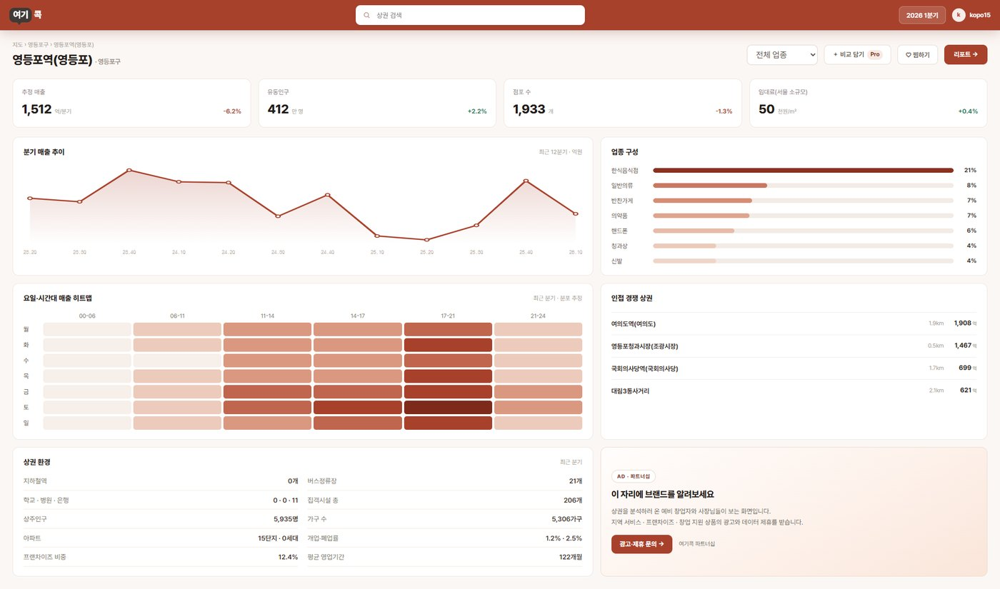
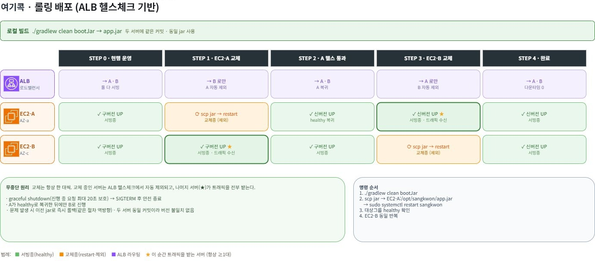
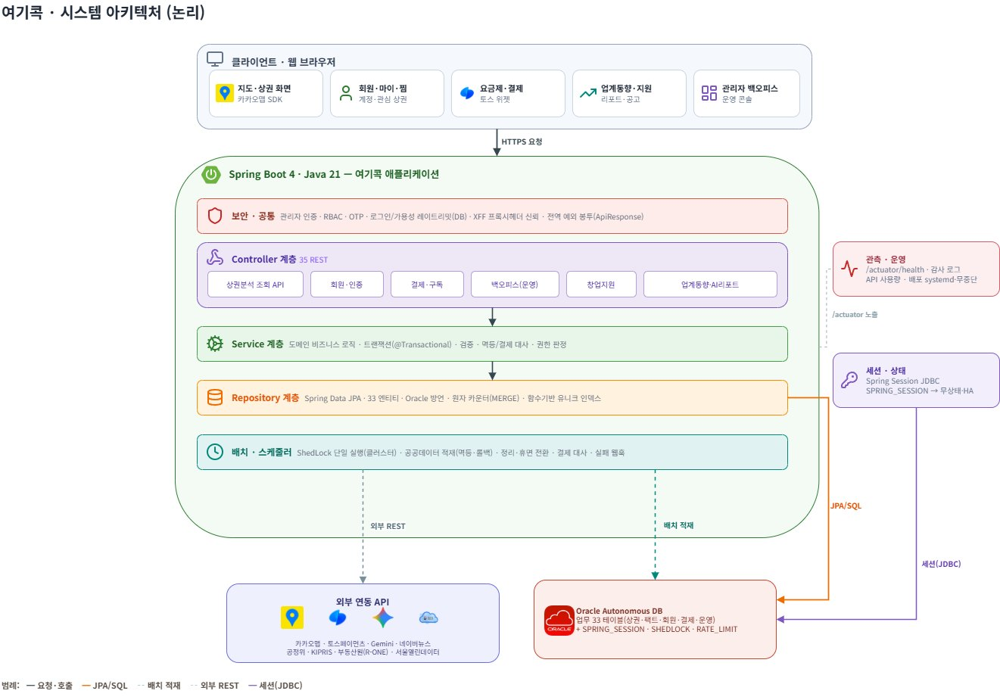
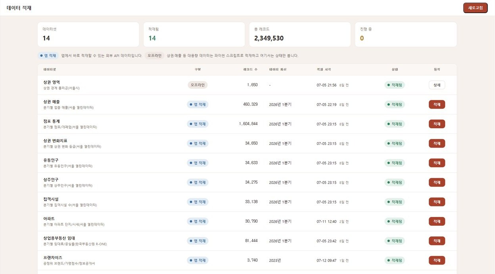

작업 05 / 10인프라 · 백엔드2026
sangkwon-platform-poly
서버 한 대가 빠져도
서비스가 멈추지 않게 배포했습니다.

01개요
공공데이터로 상권을 비교하는 서비스를, 실제로 배포해 운영했습니다
서울시가 공개한 상권 데이터를 카카오맵 위에 올려, 상권 1,650곳의 매출과 유동인구, 점포 수를 지도에서 바로 비교하는 서비스입니다. 네 명이 도메인을 나눠 백엔드부터 화면까지 각자 책임지는 방식으로 7월 3일부터 14일까지 만들었고, 저는 팀장으로서 상권분석 조회 API와 지도, 팀이 함께 쓰는 공통 기반, 그리고 배포를 맡았습니다.
배포에서 가장 신경 쓴 것은 서버를 두 대로 늘려도 아무것도 어긋나지 않게 하는 일이었습니다. 서버가 두 대가 되면 로그인 세션, 스케줄러, 요청 제한처럼 서버 안에만 두던 상태가 모두 문제가 됩니다. 그래서 상태를 DB로 옮기고, 그 위에서 한 대씩 바꾸는 배포를 설계했습니다.
1,650곳
지도에서 비교하는 서울 상권
매출 · 유동인구 · 점포 수 · 상권 변화.
220만 행
통째로 다시 넣는 공공데이터
점포 통계 하나만 160만 행입니다.
2대
서로 다른 가용 영역의 서버
ALB 뒤의 EC2 t3.small, 한 대가 빠지면 나머지가 받습니다.
20초
배포 때 진행 중인 요청을 기다리는 시간
graceful shutdown, 서버는 한 대씩 바꿉니다.
02운영 구성 · AWS 서울 리전
서로 다른 가용 영역에 서버를 한 대씩 두고, 로드밸런서 뒤에 세웠습니다
사용자의 요청은 HTTPS로 로드밸런서(ALB)에 들어옵니다. 인증서와 TLS 종료, 헬스체크는 ALB가 맡고, 서버 두 대는 nginx 없이 jar 하나만 systemd로 띄웁니다. DB는 Oracle 자율 DB이고 지갑으로 접속합니다. 아래 그림에서 장면을 고르면 요청 한 건과 배포, 로그인 한도가 실제로 어떤 길을 지나는지 볼 수 있습니다.
팀의 인프라 구성도를 옮겨 그렸습니다. 배포 장면은 설계한 배포 순서를 그대로 따라갑니다.

- ALB가 HTTPS와 헬스체크를 맡습니다ACM 인증서로 HTTPS를 끝내고,
/actuator/health를 30초마다 확인해 응답하지 않는 서버를 대상에서 뺍니다. - 서버는 jar 하나만 띄웁니다systemd가 앱을 띄우고, 앱이 죽거나 메모리가 바닥나면
Restart=always로 다시 올립니다. - 앱 포트는 ALB에서만 열립니다8080 포트의 인바운드는 ALB 보안 그룹에서 오는 요청만 허용했습니다.
03한 대씩 바꾸는 배포
교체는 언제나 한 대씩, 그동안 다른 서버가 요청을 받습니다
새 버전을 올릴 때 두 서버를 한꺼번에 내리면 그 순간 서비스가 멈춥니다. 그래서 한 대를 바꾸는 동안 다른 한 대가 요청을 모두 받도록 순서를 정했습니다. 서버는 진행 중인 요청을 최대 20초 기다렸다가 내려가고, 그사이 ALB 헬스체크가 그 서버를 대상에서 빼 줍니다.

bootJar
한 번만 빌드
로컬에서 jar를 한 번 만들고, 두 서버에 같은 커밋으로 만든 같은 jar를 올려 버전이 어긋나지 않게 합니다.
EC2-A
A를 먼저 교체
새 jar를 올리고 서비스를 다시 시작합니다. 그동안 요청은 B가 받습니다.
health
A가 돌아오면
A가 헬스체크를 통과해 대상에 다시 들어온 뒤에만 다음으로 넘어갑니다.
EC2-B
B도 같은 순서로
이번에는 A가 요청을 받습니다. 문제가 생기면 이전 jar로 같은 순서를 되밟아 돌아갑니다.
04상태는 DB로
어느 서버로 들어와도 결과가 같도록, 서버에는 상태를 두지 않았습니다
서버가 한 대일 때는 문제가 없던 것들도 두 대가 되면 어긋납니다. 로그인한 사용자가 다른 서버로 가면 다시 로그인해야 하고, 스케줄러는 서버 수만큼 돌고, 요청 제한은 그만큼 느슨해집니다. 그래서 서버끼리 나눠 가져야 하는 상태를 모두 DB로 옮겼습니다. ALB가 어느 서버로 보내든 같은 결과가 나오므로, 세션 고정 없이 서버를 대상 그룹에 더하기만 하면 됩니다.
| 상태 | 서버에 두었다면 | 옮긴 곳 |
|---|---|---|
| 로그인 세션 | 다른 서버로 가면 다시 로그인 | Spring Session JDBC |
| 스케줄러 | 서버 수만큼 겹쳐 실행 | ShedLock |
| 요청 제한 | 서버 수만큼 한도가 느슨해짐 | RATE_LIMIT_BUCKET |
| 데이터 재적재 | 같은 적재가 동시에 실행 | 함수 기반 유니크 인덱스 |

05공공데이터 재적재
220만 행을 다시 넣는 동안에도, 잘린 데이터가 보이지 않게 했습니다
상권 데이터는 분기마다 새로 나옵니다. 매출과 유동인구, 점포 수 같은 데이터를 지우고 다시 넣는데, 중간에 API 페이지가 비거나 제약을 어긴 행이 섞이면 반쯤 잘린 데이터가 커밋될 수 있었습니다. 서버가 두 대라 같은 데이터셋을 동시에 적재할 위험도 있었습니다.
BEGIN
지우고 넣기를 한 번에
DELETE와 INSERT를 한 트랜잭션에 묶어, 커밋 전까지 화면은 이전 데이터를 그대로 봅니다.
INSERT × 5,000
5,000행씩 넣습니다
묶음 하나가 실패하면 그 묶음만 한 줄씩 다시 넣습니다.
total
받은 건수를 맞춰 봅니다
API가 알려 준 전체 건수보다 적게 받았거나, 건너뛴 행이 하나라도 있으면 전부 롤백합니다.
COMMIT
다 맞을 때만 바뀝니다
모든 확인을 통과해야 새 데이터가 한꺼번에 보입니다.

- 같은 적재가 두 번 돌지 않게함수 기반 유니크 인덱스로 '실행 중' 기록을 데이터셋마다 하나로 묶었습니다. 다른 서버의 적재와 겹치면 나중 것이 건너뜁니다.
- 멈춘 작업은 하트비트로 판단합니다실행 중에는 5분마다 하트비트를 남기고, 서버가 켜질 때 15분 넘게 소식이 없는 작업만 실패로 정리합니다.
- 시작 시각으로 판단하지 않은 이유시작 시각만 보면 롤링 배포로 한 서버가 다시 켜질 때, 다른 서버에서 정상으로 돌고 있는 긴 적재까지 실패로 덮을 수 있었습니다.
06요청 제한 · 서버 두 대, DB 하나
서버가 두 대여도 요청 제한이 느슨해지지 않게 했습니다
요청 횟수를 서버 메모리에서 세면, 서버 수만큼 한도가 늘어납니다. 그래서 공유 테이블 한 줄을 두 서버가 함께 세게 했습니다. 순서가 중요했습니다. 먼저 1을 더하고, 그다음 한도를 확인합니다.
서버마다 따로 세면
10회
로그인 한도가 10분에 5회여도, 서버 두 대가 따로 세면 10회까지 통과합니다.
DB에서 함께 세면
5회
어느 서버로 들어와도 같은 줄을 세서, 한도가 그대로 지켜집니다.
- 처음 들어온 키가 부딪힐 때같은 새 키가 동시에 처음 들어와 기본 키가 부딪히면 UPDATE로 다시 시도해, 한 번도 빠지지 않게 했습니다.
- 같은 방식을 다른 한도에도관리자 로그인(30분에 10회)과 아이디 중복 확인(1분에 30회)에도 같은 카운터를 썼습니다.
Oracle MERGE 한 문장으로 더하기와 창 초기화를 함께
MERGE INTO RATE_LIMIT_BUCKET b
USING (SELECT ? RATE_KEY, ? NOW_AT, ? CUTOFF_AT FROM dual) s
ON (b.RATE_KEY = s.RATE_KEY)
WHEN MATCHED THEN UPDATE SET
b.HIT_COUNT = CASE WHEN b.WINDOW_STARTED_AT < s.CUTOFF_AT
THEN 1 ELSE b.HIT_COUNT + 1 END, ...
WHEN NOT MATCHED THEN INSERT ... HIT_COUNT = 1
더한 뒤의 값으로 한도를 확인합니다
창이 지났으면 1부터 다시 세고, 아니면 1을 더합니다. 처음 보는 키는 1로 들어갑니다.
07지도 · 상권 요약 조회 API
무거운 경계와 가벼운 숫자를 나눠, 화면이 필요한 것만 다시 부르게 했습니다
지도에는 상권 경계(GeoJSON)가 그려지고, 그 위에 매출과 유동인구 같은 숫자가 얹힙니다. 경계는 무겁고 거의 바뀌지 않지만, 숫자는 필터를 바꿀 때마다 새로 필요합니다. 그래서 두 가지를 다른 API로 나눴습니다.
- 경계는
/geo, 숫자는/summary상권 경계와 요약 수치를 따로 받아, 화면이 필요한 것만 다시 부르게 했습니다. - 적재 시점이 달라도 빈 값이 나오지 않게매출 · 점포 · 유동인구 · 변화지표를 쿼리 하나로 모으되, 각 데이터는 매출의 최신 분기를 넘지 않는 자기 최신 분기를 씁니다.
- 결과에 상한을 두었습니다요약은 2만 행까지, 매출 목록은 필터를 꼭 받고 5,000행까지만 돌려주며, 잘렸는지를 응답에 표시합니다.
- 응답과 예외는 한 가지 모양으로모든 API가 같은 응답 봉투를 쓰고, 제약 위반과 낙관적 락 충돌은 409, 처리하지 못한 예외는 내부 메시지를 숨긴 500으로 돌려줍니다.
분기가 서로 다를 때 각 데이터가 고르는 분기
| 데이터 | 고르는 분기 |
|---|---|
| 매출 | 가장 최신 분기 (기준) |
| 점포 | 매출 기준을 넘지 않는 자기 최신 분기 |
| 유동인구 | 매출 기준을 넘지 않는 자기 최신 분기 |
| 변화지표 | 매출 기준을 넘지 않는 자기 최신 분기 |
GET /api/districts/geo 상권 경계 · 무겁고 거의 그대로
GET /api/districts/summary 매출 · 점포 · 유동인구 · 변화지표
← { success, code, message, data }
08팀과 역할
도메인을 나눠 각자 끝까지 책임지고, 공통 기반은 제가 맡았습니다
네 명이 상권 · 회원 · 관리자 · 창업지원 도메인을 나눠 백엔드부터 화면까지 각자 맡았습니다. 응답과 예외처럼 모두가 함께 쓰는 공통 부분은 팀장인 제가 관리해, 서로 기다리지 않고 나란히 개발할 수 있게 했습니다.
제가 한 일
- 상권분석 · 지도DB 설계, 상권분석 조회 API, 지도 화면
- 팀 공통 기반응답 · 예외 · 배치 · 요청 제한 · 보안
- 배포EC2 두 대와 ALB 구성, 한 대씩 바꾸는 배포
팀원이 맡은 일
- 회원 · 인증 · 결제로그인과 세션, 찜, 토스페이먼츠 결제와 구독
- 관리자 · 운영관리자 인증(OTP), 공지와 1:1 문의, 운영 대시보드
- 창업지원 · 콘텐츠지원사업, 업계동향, AI 상권 리포트(Gemini)